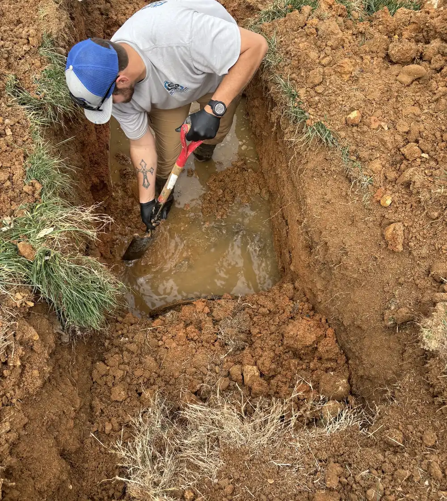
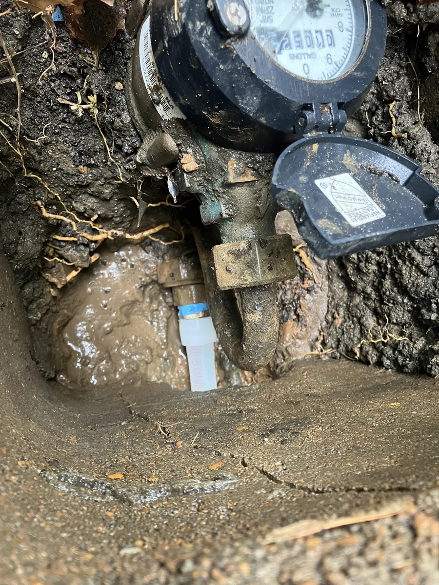
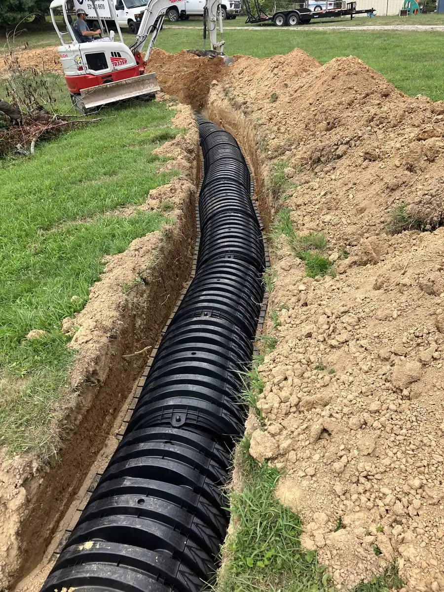
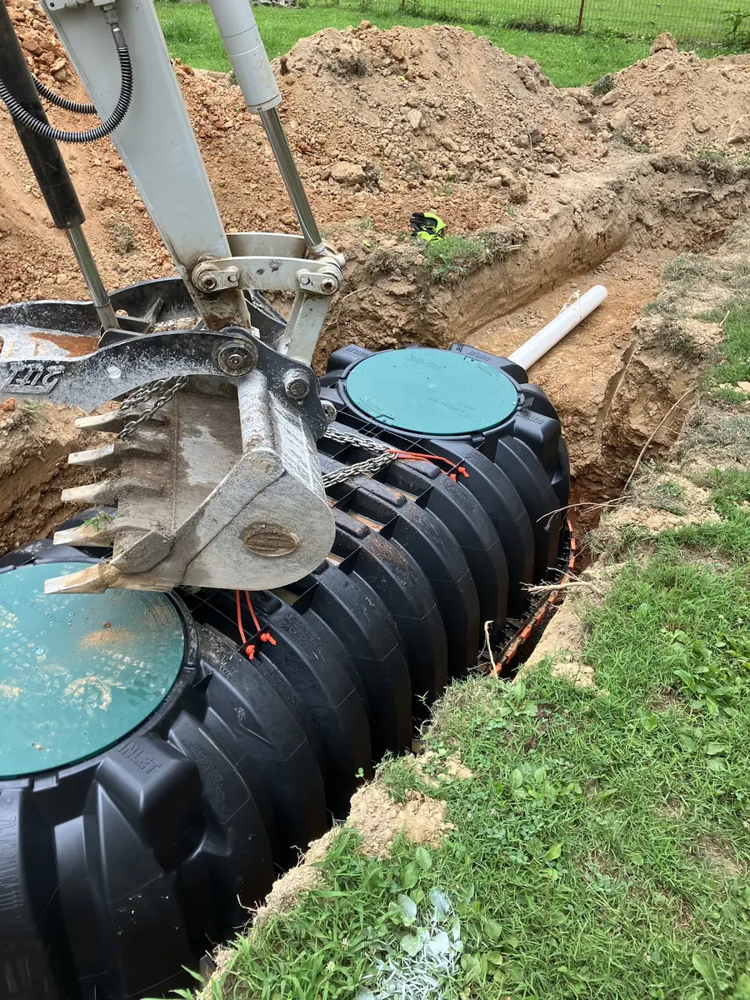
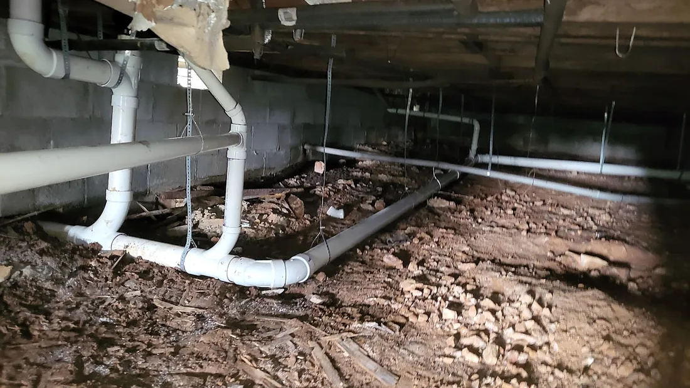
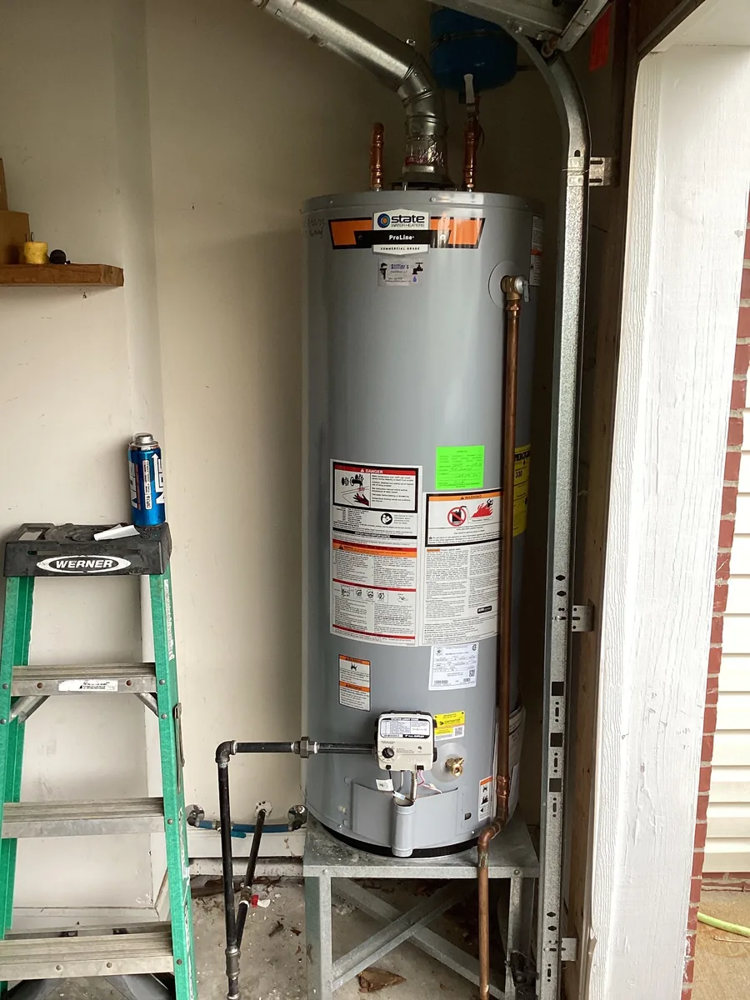
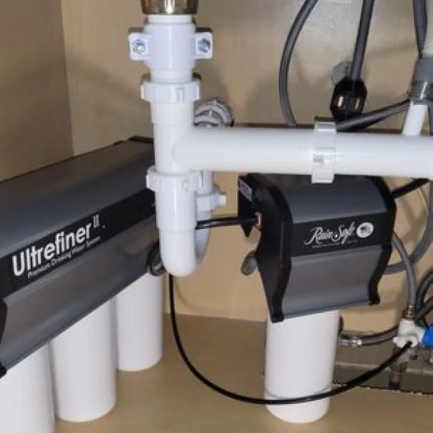

- Veteran-owned
- Clarksville, TN
Leak, clog, or no hot water? Tell us what’s going on.
We fix things around your house so you don’t have to. Send a photo of the problem and the crew shows up knowing what they’re walking into.
Monday to Friday, 7 AM to 7 PM. Or book a time online.

What’s going on?
Pick the closest one. It opens a short form where you say how bad it is and attach a photo from your phone. Water running where it shouldn’t be? Skip the form and call.
- Leak or burst pipeUnder a sink, in a wall, the yard
- Clogged drainSink, tub, toilet, main line
- Water heaterNo hot water, leaking, replacing
- Septic or drain fieldSlow, soggy yard, new field line
- Water line or yard hydrantLow pressure, a wet spot, new line
- Water filtrationSoftener, under-sink filter
- New construction or remodelRough-in, a new bathroom
- Something elseFaucets, toilets, disposals
When it can’t wait until Monday
An ice storm, the day after Christmas, a call at almost 7 at night. Three customers, in their own words.
“We had a water line burst during the recent ice storm. We called a ton of companies and no one could come out. Stifflers was able to come out the same day. Matthew was incredibly nice and was able to get our water line fixed and water restored to the house by the end of the night. …”
“… I called the day after Christmas, when most companies won’t come out or would charge double. Ryan already had a full day scheduled, but he still made time for us.
He didn’t just squeeze us in, he showed up, diagnosed the problem, and fixed everything the same day. …”
“Quick call back at almost 7pm, next morning appointment, honest assessment that led to understanding of an unexplained soft spot in the floor, repair by lunch at a fair price. Will use again.”
Inside the house and out in the yard
The photos Stiffler’s posts are mostly holes in the ground: water lines, drain fields, septic tanks. And the usual indoor work too.






Veteran-owned, and people notice
Stiffler’s identifies as veteran-owned on its Google profile. Customers bring it up on their own.
“Our company understands times are tough, that is why we will work with you to find something that fits your needs and budget.”
From Stiffler’s own website.
“Called them because they are veteran owned, we are out of state landlords. Called for advice, and had a bursted pipe. Supervisor sent a technician out within the hour everything was fixed perfectly! Charged me a really fair price for the service. …”
“They have earned my business for life. They are a local company, veteran owned and operated. Both gentlemen I dealt with were awesome. Don't let the fact that they are a smaller locally owned company fool you, they have the equipment and expertise of much larger companies. …”
The bigger jobs
“… Ryan and Matthew installed over 200 feet of water line and three frost-proof hydrants for our farm. They showed up on time, were professional, and went above and beyond to get the job done right. Their pricing is very fair, and we couldn’t be happier. …”
“Stifflers Plumbing installed all the plumbing in our new construction home. I will recommend these guys every chance I get!
Exceptionally professional and knowledgeable. They did high quality work on time and came in under budget (the only contractors that came in under budget on our whole home!). …”
“… Once I received my permit from the state of Tennessee they started working on my new drain field. They performed high quality work. They finished the job in just a few days. Ryan and Matthew are hard working dependable individuals. …”
Every review on this site is quoted word for word from Google.
Call the shop
(931) 222-9970Monday to Friday, 7 AM to 7 PM
Clarksville, TN 37043
stifflersplumbing11@gmail.com
Rather send a photo?
Pick what’s wrong, attach a picture, and leave a number. It goes straight to the shop’s phone.